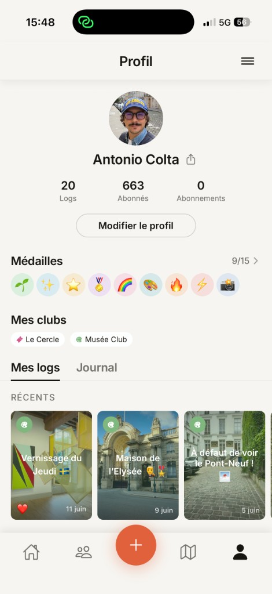
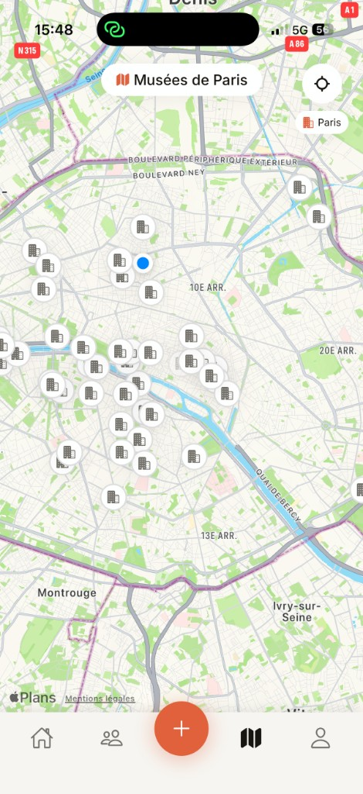
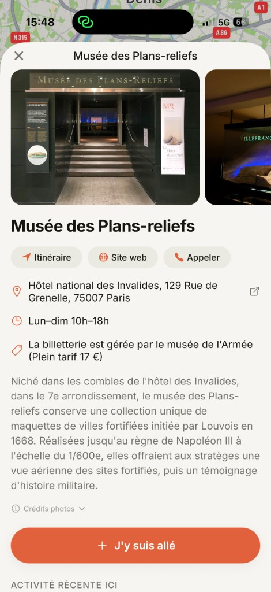
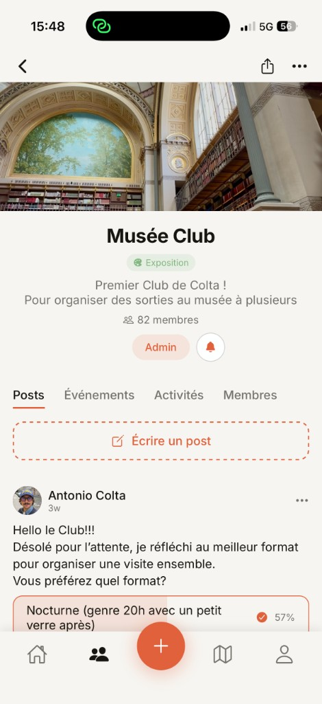
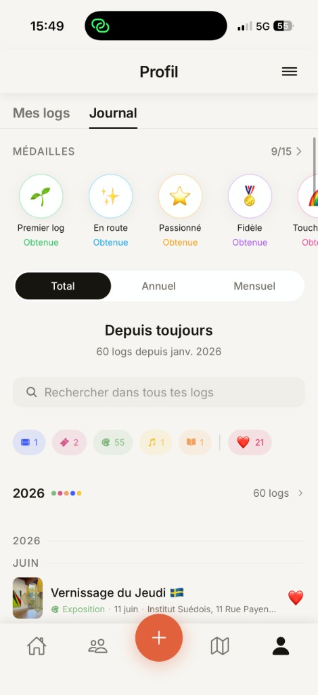

Every outing, in one place.
Chaque sortie, au même endroit.
Add a title, a note, photos, the place and the date — and Colta files it under the right kind of culture. Keep a log private, or let it show up in your friends' feed.
Ajoutez un titre, une note, des photos, le lieu et la date — et Colta le classe dans le bon type de culture. Gardez un log privé, ou laissez-le apparaître dans le fil de vos amis.
- Films & theatre, exhibitions, concerts and booksFilms & théâtre, expos, concerts et livres
- Up to 10 photos, notes and a location per logJusqu'à 10 photos, des notes et un lieu par log
- Badge the ones you loved to remember themMarquez vos coups de cœur pour vous en souvenir

A map of every museum in Paris.
Une carte de tous les musées de Paris.
Colta maps the museums of Paris so you always know what's near. See where you've already been, find the ones you've been meaning to visit, and pick your next Sunday.
Colta cartographie les musées de Paris pour toujours savoir ce qui est à côté. Voyez où vous êtes déjà allé, trouvez ceux que vous vouliez visiter, et choisissez votre prochain dimanche.
- Every Paris museum, pinned on one mapChaque musée parisien, épinglé sur une carte
- See visited vs. still-to-discover at a glanceVisités ou encore à découvrir, en un coup d'œil


Culture is better together.
La culture, c'est mieux à plusieurs.
Start a club around the films, books or shows you love. Invite friends, plan outings with dates and venues, post and poll, and build a shared journal of everything you see together.
Créez un club autour des films, livres ou spectacles que vous aimez. Invitez des amis, organisez des sorties avec dates et lieux, publiez et sondez, et tenez un journal partagé de tout ce que vous voyez ensemble.
- Public or private clubsClubs publics ou privés
- Events with RSVPs, posts and pollsÉvénements avec RSVP, posts et sondages

Follow friends.
Suivez vos amis.
See what your friends are reading, watching and visiting in a calm, chronological feed — no algorithm. Like, comment, and build a profile that tells your cultural story.
Découvrez ce que vos amis lisent, regardent et visitent dans un fil calme et chronologique — sans algorithme. Aimez, commentez, et construisez un profil qui raconte votre histoire culturelle.
- A chronological feed, public or private accountsUn fil chronologique, comptes publics ou privés
- Profiles with stats, likes and commentsProfils avec statistiques, likes et commentaires
Keep a weekly rhythm.
Gardez un rythme hebdomadaire.
Log at least once a week to grow your streak — a gentle nudge to keep culture in your life, without the daily pressure. Hit milestones and collect medals along the way.
Enregistrez au moins une fois par semaine pour faire grandir votre série — un rappel tout en douceur, sans la pression quotidienne. Atteignez des paliers et collectionnez des médailles en chemin.
- A weekly streak, not a daily choreUne série hebdomadaire, pas une corvée quotidienne
- Medals for films, books, expos and moreDes médailles pour films, livres, expos et plus

Three steps to a richer cultural life.
Trois étapes vers une vie culturelle plus riche.
Log itEnregistrez
Pick a type, add a title, note, photos and place. Saved instantly.Choisissez un type, ajoutez un titre, une note, des photos et un lieu. Sauvegardé aussitôt.
Share itPartagez
It appears in your friends' feed, where they can like and comment.Il apparaît dans le fil de vos amis, qui peuvent aimer et commenter.
Do it togetherVivez-le ensemble
Join a club, plan outings and keep a shared journal as a group.Rejoignez un club, organisez des sorties et tenez un journal commun.
Start your cultural journal.
Commencez votre journal culturel.
Never forget the things that move you.N'oubliez plus jamais ce qui vous touche.